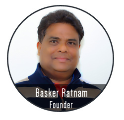
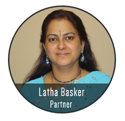

Crestwood IndAus Care Pty Ltd is an emergent organisation for alms and charity that had been established as a fund raiser for a home for Indian kids with intellectual disability. I, Basker Ratnam started this organisation in 2005 and along with my team of individual contributors, had been involved in caring and supporting the ailed, disadvantaged and the needy for many years in the past.
The organisation involves many volunteers and philanthropists, whose common interest in indulgence of selfless service towards charity and help for the needy. These volunteers give time, money, service, information, goods, voice and also their social influence for the unfortunate and needy; thus also encouraging donors and contributors to contribute generously for the cause.
We have been well known organisers of social, sporting events for entertainment and use this opportunity to raise funds for noble cause. One of the many such attempts by our organisation to raise funds for the trust is intending to delight Indian settlers and subcontinent/South Asian visitors in Australia with an extravagant musical event. Crestwood IndAus Care hopes to unite melodious minds and the musical hearts together on one night that can be filled with rhythm, improvisational music of different Indian genres.
Though the organisation had been registered and established recently, the people involved in the organisation had been giving disadvantaged people, better chance and light all through their selfless service for many years.
The organisation had mostly involved with charities of self-funds and personal interests. However there were many social events and activities conducted through this firm that had been soliciting and congregating voluntary funds.
Sporting events, religious programmes that has long humanistic traditions of alms and support, had been overseen and conducted by Basker. Events such as this have provided the grounds for collecting donations from individuals, businesses, trusts and institutions.
Children are our hopes for the future world, and they deserve basic life essentials immune from abuse, diseases and educational and economic opportunities. Homeless communities and poverty line kids have been lacking these basic amenities and had been deprived of these mandatory essentials. Funds raised through above events and programmes has been manifested in good deeds and development of these unfortunate kids and the needy children.
National Cancer Foundation is an non-profit organisation which works hard to raise awareness of risk factors, prevention measures and the benefits of early detection of cancer, and to provide dignified accomodation for patients and their families during oncology treatment. We get no government funding and rely entirely upon the generosity of the Australian community to fund these programs.
This show event has registered a fundraiser with National Cancer Foundation to improve the quality of life for people sufferering from cancers.